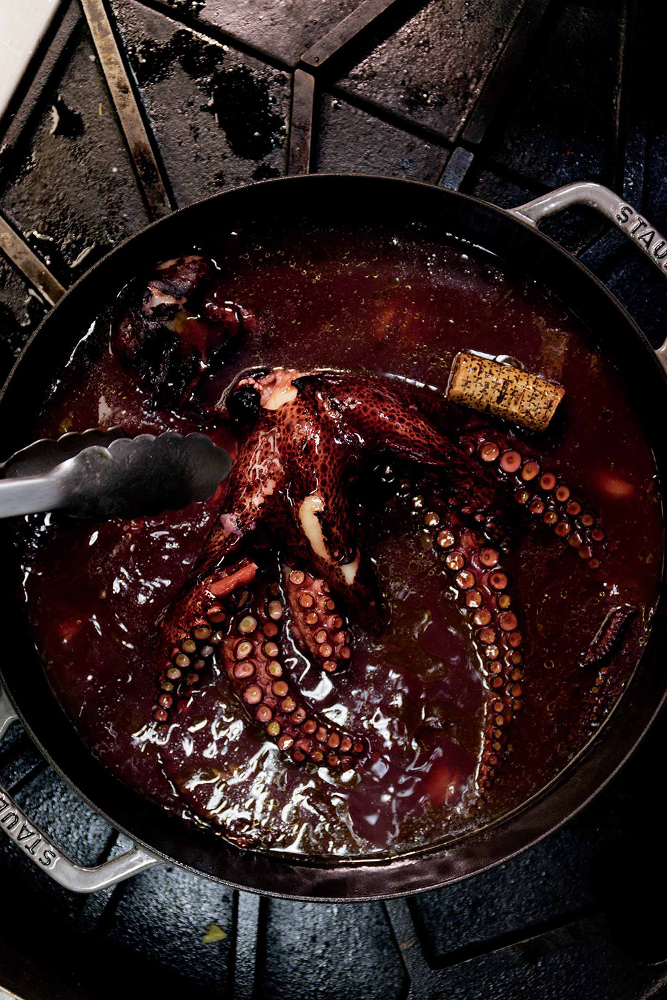

Go Back
Reverse Seared Octopus

The tenderest Octopus you'll ever have
Ingredients
- 1 Octopus
- 1 wine cork
- Olive Oil
- Calabrian Chiles
- Some cloves of garlic
Creation
- Combine the octopus with some garlic and chiles and coat in olive oil and place in a large baking dish
- Cover and cook in the oven for 2 hours at 300 degrees
- Remove from the oven and sear on the pan till crispy
- Pairs great with a rosè and chimichurri